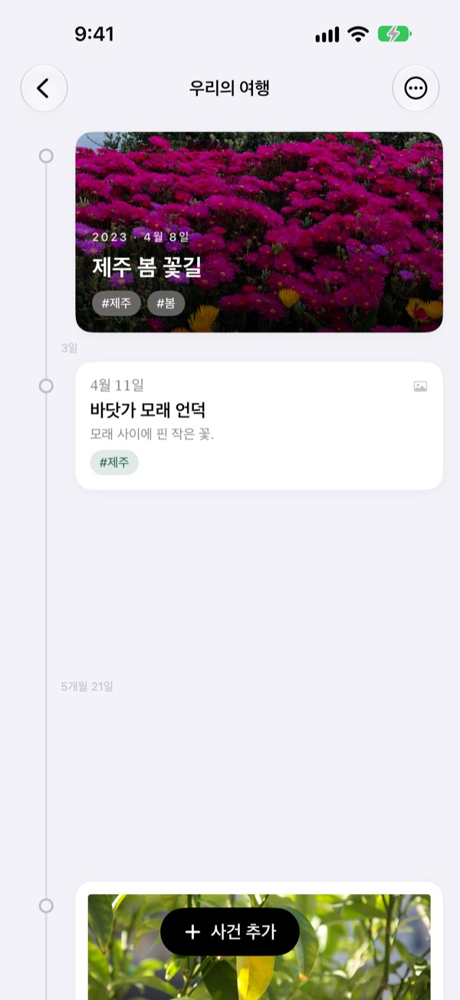
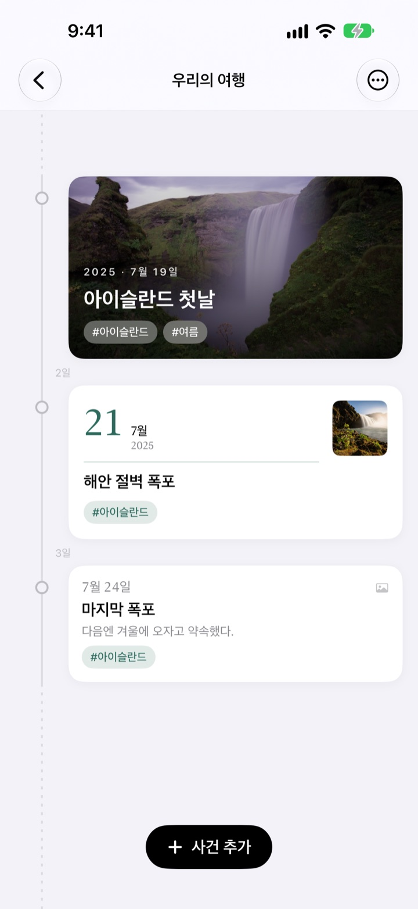
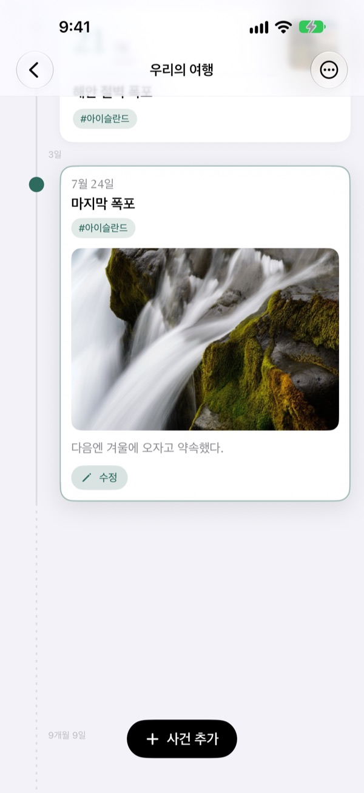
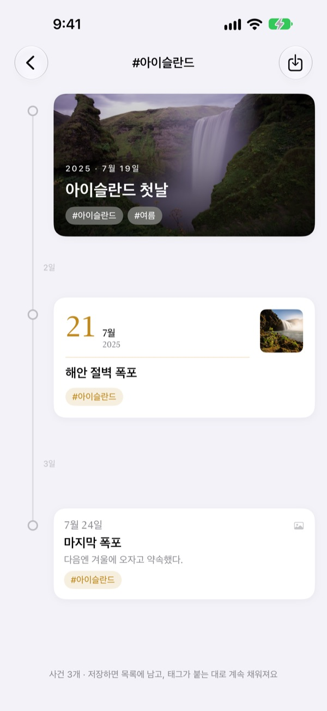
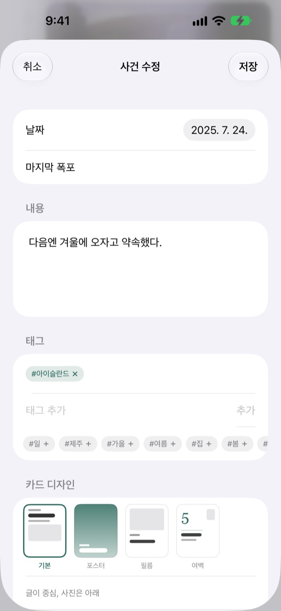

흐른 시간만큼
벌어지는 타임라인
사흘과 닷새는 3대 5로 벌어지고, 2년 4개월 같은 긴 공백은 점선으로 접혀요. 사건 사이 간격만 봐도 그때의 시간이 보여요.
모든 기능이 무료예요. iPhone과 iPad에서 써요.

간격을 직접 벌려 보세요
버튼을 누르면 마지막 사건 뒤에 새 사건이 생겨요. 간격은 앱과 같은 규칙으로 그려요.
사진첩을 넘겨 봐도 시간은 보이지 않아요
사진 보관함은 날짜순으로 줄을 세울 뿐, 사흘 사이도 2년 사이도 똑같은 한 칸으로 보여 줘요. 여울은 사건 사이에 흐른 시간만큼 간격을 벌려서, 어디가 빽빽했고 어디가 비었는지 한눈에 보여 줘요.
간격이 곧 흐른 시간이에요
타임라인 전체에 하나의 배율을 써서, 같은 기간은 화면 어디서나 같은 길이로 그려요. 모든 간격에는 3일, 5개월 21일처럼 실제 기간이 적혀요.
너무 가까운 사건은 겹치지 않게 최소 간격을 두고, 너무 긴 공백은 점선으로 접어요.

그날 찍은 사진을 찾아 줘요
사건 날짜를 정하고 관련된 사진 찾기를 누르면 그날 찍은 사진을 보관함에서 모아 보여 줘요. 원하는 사진이 없으면 직접 찾기로 골라도 돼요.
타임라인에서 사건을 누르면 사진과 이야기가 그 자리에서 펼쳐져요.

태그 하나로 흩어진 순간을 모아요
사건에 #아이슬란드 같은 태그를 달고 누르면, 여러 타임라인에 흩어진 같은 태그의 사건이 새 타임라인 하나로 모여요.
저장해 두면 목록에 남고, 나중에 같은 태그를 단 사건도 저절로 들어와요.

사건마다 어울리는 카드를 골라요
글이 중심인 기본, 사진을 꽉 채우는 포스터, 인화지 같은 필름, 큰 날짜가 서는 여백. 고르는 즉시 미리보기가 바뀌어요.

시작은 세 단계면 돼요
- 1
타임라인을 만들어요
아이의 첫해, 연애, 여행처럼 주제마다 이름과 색을 정해요.
- 2
사건을 추가해요
날짜와 제목을 적고, 그날 찍은 사진을 붙여요.
- 3
태그를 달아요
같은 태그를 단 사건은 타임라인을 넘어 한데 모여요.
카드 디자인 네 가지
- 기본
- 글이 중심이고 사진은 아래에 놓여요.
- 포스터
- 사진이 카드를 꽉 채우고 큰 제목이 그 위에 얹혀요. 사진이 없으면 타임라인 색으로 채워요.
- 필름
- 인화지처럼 여백을 두른 사진에 타자기 글씨와 날짜 도장이 찍혀요.
- 여백
- 큰 날짜 숫자가 서고 사진은 작게. 글씨가 주인공이에요.
새 사건은 그 타임라인에서 가장 최근 카드와 같은 디자인으로 시작해요.
모든 기능이 무료예요
무료
- 타임라인 여러 개, 이름과 색 고르기
- 사건마다 사진, 이야기, 태그
- 그날 찍은 사진 찾기
- 태그 타임라인 저장
- 카드 디자인 네 가지
- iCloud로 iPhone과 iPad 동기화
- 단축어와 Siri로 기록하기
개발자 응원하기
- 작은 팁, 보통 팁, 큰 팁 중에서 골라요
- 기능을 여는 결제가 아니에요. 고마운 마음을 전하는 곳이에요
설정 화면에서 원할 때만 보낼 수 있어요.
광고도 구독도 없어요.
자주 묻는 질문
사건 사이 간격이 왜 다 다른가요?
여울은 실제로 흐른 시간만큼 간격을 벌려요. 모든 간격에 같은 배율을 쓰기 때문에 사흘과 닷새는 3대 5로 보여요. 너무 가까운 사건은 겹치지 않게 최소 간격을 두고, 너무 긴 공백은 점선으로 접은 뒤 2년 4개월처럼 실제 기간을 적어 둬요.
그날 찍은 사진이 안 보여요.
날짜로 사진을 찾으려면 사진 접근 권한이 필요해요. 설정 앱 > 여울 > 사진에서 접근을 허용해 주세요. 기기 시간대 기준으로 그날 자정부터 자정까지 찍은 사진을 찾아요. 권한을 주고 싶지 않다면 바로 아래 직접 찾기로 보관함에서 골라도 돼요.
태그 타임라인은 무엇인가요?
사건에 붙인 태그를 누르면 모든 타임라인에서 같은 태그를 가진 사건을 모아 하나의 타임라인으로 보여 줘요. 자주 보는 태그는 저장해 목록에 둘 수 있어요. 사건을 복사하지 않고 모아 보여 주는 것이라, 원래 사건을 고치면 그대로 반영되고 태그 타임라인을 지워도 사건은 남아요.
태그 타임라인에는 왜 사건 추가 버튼이 없나요?
태그 타임라인은 사건을 담는 곳이 아니라 태그로 모아 보는 화면이라서, 새 사건이 어느 타임라인에 들어갈지 정할 수 없어요. 원래 타임라인에서 사건을 추가하고 태그를 달면 여기에 저절로 모여요.
앱을 열지 않고 기록할 수 있나요?
네. 단축어 앱이나 Siri에서 사건 기록하기를 쓰면 타임라인과 제목만 고르면 돼요. 날짜를 정하지 않으면 지금 시각으로 남아요.
다른 기기에서도 기록을 볼 수 있나요?
같은 Apple 계정으로 iCloud에 로그인한 iPhone과 iPad끼리 자동으로 이어져요. 설정 앱 > Apple 계정 > iCloud에서 iCloud가 켜져 있는지 확인해 주세요. 네트워크 상태에 따라 조금 늦게 반영될 수 있어요.
기록을 지우고 싶어요.
목록에서 타임라인을 왼쪽으로 밀거나 편집 버튼을 눌러 지울 수 있어요. 타임라인을 지우면 그 안의 사건도 함께 지워져요. iCloud에 남은 데이터는 설정 앱 > Apple 계정 > iCloud > 저장 공간 관리에서 지울 수 있어요.
내 기록이 개발자에게 전송되나요?
아니요. 기록과 사진은 기기와 본인의 iCloud에만 저장되고, 개발자는 볼 수 없어요. 자세한 내용은 아래 개인정보처리방침에 있어요.
버그를 알리거나 기능을 제안하고 싶어요.
앱의 설정 화면에서 바로 보낼 수 있어요. 이메일이나 인스타그램 @lee25_ios로 보내 주셔도 돼요. 기기 모델과 iOS 버전, 어떤 상황이었는지 함께 적어 주시면 더 빨리 도와드릴 수 있어요.
궁금한 점이나 의견은 leeo@kakao.com로 보내 주세요.